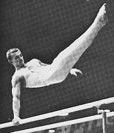

Sergei Diomidov (USSR)
1966 World PB Champion

Medal Total
Olympic
Games:
2 Silver, 1 Bronze
World Championships: 1 Gold, 2 Silver
European Championships:
4 Bronze
Diomidov was born in Turtkule, Uzbek SSR, on July 7, 1943. In 1959, he achieved the Master of Sport ranking at the All-Union Dynamo Championships. From 1961 to 1967, Diomidov trained at the Amy Club in Tashkent. He moved to Moscow in 1968 and trained at the Central Army Club until he retired in 1972. Diomidov was coached by Konstantin Karakashyants.
Competition Results
1963
USSR Championships: 5th PH
USSR Cup: 8th AA, 3rd PH, 4th HB
1964
Olympics: 2nd Team, 14th AA, 4th PB
USSR Championships: 6th AA, 1st PB, 6th PH
USSR Cup: 3rd AA
1965
European Championships: 3rd AA, 3rd PH,
3rd PB, 3rd HB, 4th R, 5th V
USSR Championships: 1st AA, 1st PH, 1st PB, 2nd HB
USSR Cup: 2nd AA, 2nd FX, 3rd V
USSR-JPN Dual Meet: 1st AA
1966
FRG-USSR Dual Meet: 1st Team, 1st AA
USSR Championships: 2nd AA, 1st FX, 1st PB, 2nd PH, 3rd R, 3rd V
USSR Cup: 3rd AA, 2nd PH, 3rd V
World Championships: 2nd Team, 11th AA, 1st PB
1967
Pre-Olympics: 1st AA
USSR Championships: 2nd AA, 2nd HB, 4th PH, 6th FX, 6th PB
1968
Olympics: 2nd Team, 6th AA, 3rd V,
5th HB, 6th R
USSR Championships: 2nd AA, 1st PH, 1st PB, 1st R, 2nd V, 2nd HB, 3rd FX
USSR Cup: 1st AA, 2nd PH, 3rd FX
1969
Army Spartakiade: 2nd AA, 1st PH, 3rd FX
USSR Championships: 1st AA, 1st PH, 2nd V, 3rd PB, 6th FX
USSR Cup: 4th AA, 3rd PB
USSR-GDR-FIN: 1st Team, 1st AA, 1st PH, 2nd FX, 2nd R, 2nd PB
1970
USSR Championships: 4th AA, 1st PB, 1st HB, 2nd PH, 2nd V, 3rd R,
4th FX
USSR Cup: 2nd AA, 2nd PH, 3rd R
USSR-FIN: 1st Team, 3rd AA, 2nd PB, 2nd HB, 3rd R, 3rd V, 5th FX, 5th PH
World Championships: 2nd Team, 10th AA, 6th PB
1971
Army Club Championships: 1st AA
USSR Championships: 9th AA, 4th PH, 4th PB
USSR Cup: 2nd AA
1972
Army Club Cup: 3rd AA
USSR Championships: 5th AA, 5th V, 5th PB, 8th PH
USSR Cup: 6th AA
1973
USSR Championships: 19th AA
This page was created on March 18, 2000
and was last updated on March 25, 2026.
© Gymn Forum